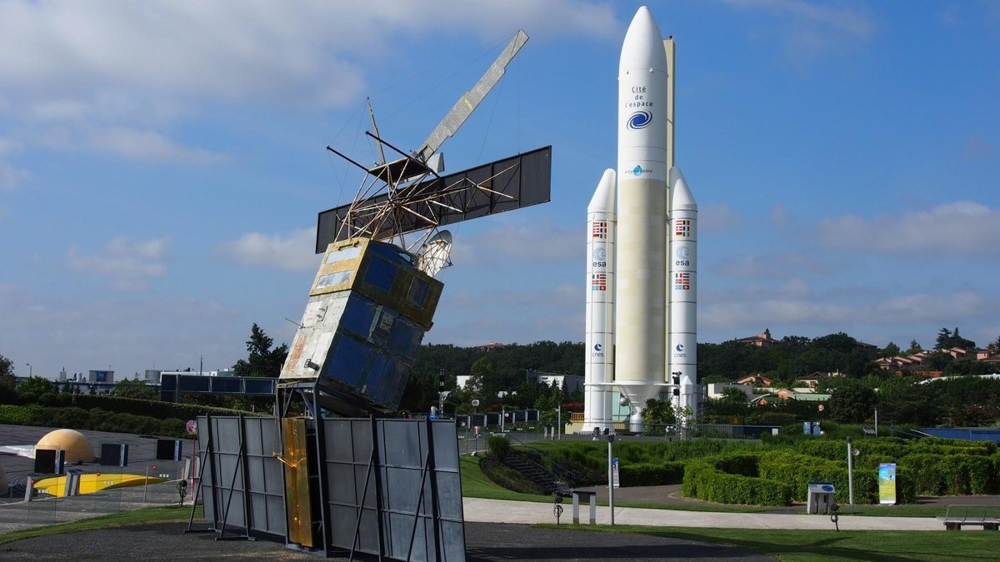

TROISIÈME · JDA PESSACUne journée.
Une journée.
Tout un univers.
Direction la Cité de l’Espace à Toulouse pour explorer, expérimenter et regarder le ciel autrement. Notre projet de sortie, expliqué à toute la classe.
Un projet proposé à la classe, à valider avec le collège.

NOTRE DESTINATIONCité de l’EspaceToulouse, France
01 / FORMATUne journée
Aller et retour le même jour
02 / TRANSPORTCar privé
Départ depuis le collège
03 / SUR PLACE10 h → 16 h
Créneau prévu, à confirmer
04 / LA CLASSEEnsemble
30 élèves + 4 adultes envisagés
LE FIL DE NOTRE JOURNÉEDe la curiosité
De la curiosité
à la découverte.
On sélectionne quelques activités pour avoir le temps d’en profiter. Le planétarium est notre priorité.
POURQUOI CETTE SORTIE ?Les sciences,
Les sciences,
en vrai.
Voir une fusée à taille réelle, comprendre l’exploration spatiale et découvrir des métiers scientifiques : une journée qui relie physique-chimie, technologie et curiosité.
Le format d’une journée remplace le séjour initial avec nuitées. La participation et l’organisation restent soumises à l’accord du collège.
Voir comment la journée s’organise →